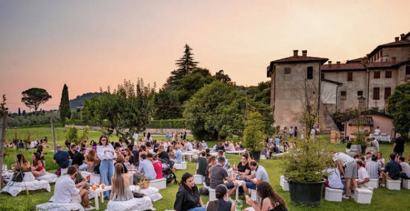
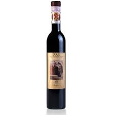

“Radici che Parlano: viaggio nella cultura di un paese”

Le feste e le tradizioni culturali di Scanzorosciate raccontano l’anima autentica del territorio, unendo la memoria rurale alla vitalità contemporanea. Ogni celebrazione nasce dal legame profondo tra la comunità e la sua terra, un legame che emerge nei riti, nei sapori e nell’atmosfera che avvolge il paese durante i momenti collettivi.

Il Moscato di Scanzo rappresenta il fulcro identitario di molte ricorrenze: le feste a esso dedicate non sono semplici appuntamenti enogastronomici, ma vere occasioni per riscoprire le origini del luogo e il lavoro dei vignaioli. Le strade si animano di musica, profumi e racconti, trasformando il paese in un percorso di scoperta culturale.
Accanto alle celebrazioni del vino, restano vive le feste patronali, momenti in cui la dimensione religiosa si intreccia con quella sociale, rafforzando il senso di appartenenza e creando occasioni di incontro tra generazioni. A completare il quadro ci sono sagre, iniziative culturali e piccole rievocazioni che mantengono vivo il legame con la storia locale.
Scopri tutte le iniziative qui sotto!
Immergiti nella vita del nostro comune! Clicca qui sotto per vedere tutti gli eventi che possiamo offrirti!